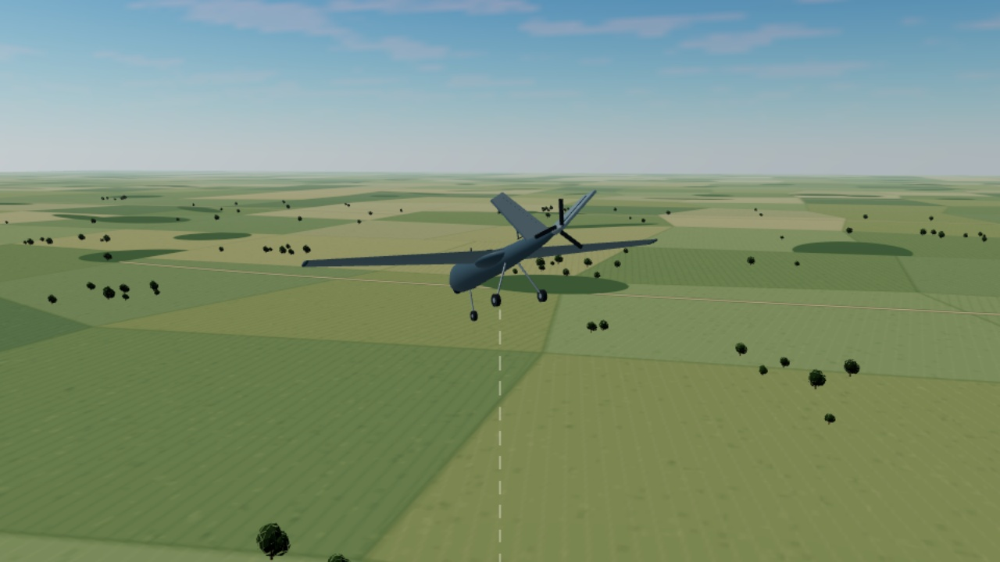

نجات خودکار پرنده
RESCUE
پاسخ به تکلیف، پیادهسازی و شواهد آزمون

۱ زمینه و هدف
همان مأموریتِ سند
- آغاز سقوط را به اپراتور هشدار میدهیم.
- با ادامه خطر، از مد جاری کنترل را میگیریم و بازیابی میکنیم.
- پس از تثبیت، کنترل به خلبان بازمیگردد؛ بیپاسخماندن به چتر میانجامد.
منطق نجات داخل فریمور است. پنل، ابزار مشاهده، راهاندازی و تحلیل است؛ TECS موجود پرواز را کنترل میکند.
مشاهده تکلیف اصلی۲۲ حالت مستقل در SITL تأیید شدهاند. ده تست دستی کامل در خود QGC هنوز تکمیل نشده است.
۲ رفتار کلی
RESCUE
ارتفاعهای ۱۰۰ و ۲۰۰ متر نسبت به Home هستند. AGL مدل در نمایش سهبعدی، مرجع جداگانه دارد.
۳ پارامترها
پنج پارامتر زیر مستقیماً در تکلیف آمدهاند. برای تعریف پایداری، شکست بازیابی و واکنش معتبر، ۲۱ تنظیم تکمیلی را همراه توجیه افزودهایم.
| پارامتر | مقدار پایه | نقش |
|---|
۲۱ تنظیم تکمیلی و دلیل وجود آنها
| پارامتر | مقدار آزمون | کارکرد و دلیل |
|---|
این جدول فقط پارامترهای افزودهشده ما را دارد. تنظیمات موجود شبیهساز و کنترلگر در فایل کامل .parm حفظ شدهاند.
۴ تشخیص و ورود
ارتفاع کم، بهتنهایی تشخیص سقوط نیست
مسیر اصلی: نزول پیوسته حداقل یک ثانیه و افت دو متر، سپس شتاب نزولی بیش از ۵ با دوام ۰٫۲ ثانیه. هشدار زیر ۲۰۰ متر؛ گرفتن کنترل زیر ۱۰۰ متر، فقط هنگام armed و پرواز.
حفاظت افزوده برای نزول با سرعت ثابت
زیر ۱۰۰ متر، نزول تأییدشده بالای ۵ متر بر ثانیه با زمان رسیدن به Home کمتر از ۶ ثانیه نیز میتواند فعال کند. زیر ۳۰ متر، حد نزول ۲ است. ترمز تأییدشده و فرصت محدود بالاکشیدن بررسی میشوند.
این حفاظت، توسعه صریح نسبت به شرط صرفاً شتابی سند است.
۴ ۳ بازیابی با TECS
کنترل انرژیِ موجود، با هدفهای تازه
RESCUE هدف ارتفاع ۲۰۰ متر Home و سرعت مجاز را به TECS میدهد. رول هدف صفر است و کنترلگرهای وضعیت موجود سطوح پروازی را هدایت میکنند. در بخش اصلی صعود، کاملترین گاز مجاز درخواست میشود.
نزدیک هدف، TECS توان را برای تثبیت تنظیم میکند. محدودیت سرعت و واماندگی برقرار است؛ قانون تازهای برای پیچ و گاز ننوشتهایم.
در ورود اضطراری، مقداردهی حالت داخلیِ فرمان پیچ TECS، تأخیر خروج از شیرجه نزدیک عمودی را کاهش میدهد.
خط قرمز سرعت: حداقلِ پروفایل مدل، ۱۰ متر بر ثانیه.
۴ ۴ تحویل کنترل
تایمر پس از تثبیت شروع میشود
- ارتفاع ۲۰۰ ±۵ متر و سرعت عمودی حداکثر ±۱ متر بر ثانیه
- رول و پیچ حداکثر ۱۰ درجه؛ نرخ چرخش حداکثر ۱۵ درجه بر ثانیه
- سرعت هوایی حداقل ۱۰ متر بر ثانیه؛ همه شرطها برای دو ثانیه
تغییر مدِ خلبان در پنجره پنجثانیهای پذیرفته میشود. مسیر افزوده استیک، تغییر تازه و عمدی ۱۲۰ میکروثانیهای برای ۰٫۳ ثانیه میخواهد و FBWA را انتخاب میکند؛ RSC_STK_EN=0 آن را خاموش میکند.
این کنترل، بازپخش رویداد لاگ است و فرمانی به پرنده نمیفرستد.
۴ ۵ چتر نجات
بازآزمایی سناریوی ۵ با همان باینری، از ثبت native تا رسیدن مدل به زمین. پخش دوبرابر؛ منظره و ابعاد مدل نمایشیاند.
رهاسازی با AP_Parachute
پس از پایان مهلت بدون پاسخ، درخواست چتر، قطع موتور و disarm ثبت میشوند. در پروفایل حاضر، خروجی رهاساز ۰٫۵ ثانیه تأخیر دارد و مدل چتر طی ۱٫۵ ثانیه باز میشود.
پس از رهاسازی، برای آزمون تازه باید شبیهسازی دوباره آغاز شود. رسیدن مدل به زمین، تأیید چتر واقعی یا سازه پرنده نیست.
۵ حالتهای مرزی و ایمنی
آنچه تکلیف الزام کرده
- واگذاری پس از گرفتن کنترل از MANUAL
- جلوگیری از رفت و برگشت مکرر RESCUE و MONITOR
- عدم مداخله با RSC_ENABLE=0
- ثبت گذارها و مقدارهای محرک در لاگ
تصمیمهای اجرایی و قابلیتهای افزوده
پایداری را عددی تعریف کردهایم؛ پیشرفت را با ارتفاع یا انرژیِ سرعت میسنجیم. بازیابیِ ناموفق، افت ناوبری و نزدیکشدن خطرناک به Home، مسیر چتر دارند. نزول ثابت، ترمز واقعی و پاسخ تازه استیک نیز جدا بررسی میشوند.
گاز کامل، بهتنهایی به معنی صعود نیست
در آزمون خرابی پیشران، نبود پیشرفت به درخواست چتر در ۷۳٫۵۴ متر Home منجر شد.
Home، زمین زیر پرنده نیست. حفاظتها برای مدل حاضر آزموده شدهاند؛ ارتفاع بسیار کم یا زمین مرتفع میتواند فرصت بازیابی را از بین ببرد.
۶ اقلام تحویل
پنج قلم خواستهشده در بسته تحویل، پوشههای مشخص دارند. فایلهای اجرایی و وابستگیها نیز همراه باینری قرار دارند.
۷ سناریوهای SITL
هفت سناریو، هشت پرواز؛ دو مد منبع جدا بررسی شدهاند. ۱۴ رگرسیون، پوشش مهندسیِ جدا هستند.
گزارش و علت تصمیم
کجا و چرا سیستم فعال شد
در هر گزارش، زمان بومی پرواز، ارتفاع Home، شتاب، نزول، موقعیت و بیت علت با هم دیده میشوند. انتخاب رویداد، نمودار و مسیر را روی همان لحظه متمرکز میکند.
- 32
- ورود تکمیلی به دلیل زمان کوتاه تا Home
- 64
- ترمز واقعی با فاصله توقف کافی
- 128
- فرصت محدود برای آغاز بالاکشیدن
ثبت دستی با برچسب Recorded میماند؛ بدون کنترل شواهد، به Pass تبدیل نمیشود. BIN و گزارش قابل دریافتاند.

دیدن ویدئوی حفاظت نزول ثابت
دریافت و اجرا
دو مسیر اجرا، یک فریمور
QGC-Manual-Ground.exeپرنده خاموش و غیرمسلح روی باند؛ تیکآف و هدایت با خود کیوگراند، بدون سناریوی خودکار.
RESCUE-Flight-Lab.exeپنل محلی، اتصال کیوگراند و نمایش خودکار ۲۴۰ متری.
دامنه نتیجه
۲۲ حالت مستقل با باینری مشخص بررسی شدهاند. یک بازآزمایی سناریوی ۵ برای ویدئوی کامل چتر نیز تأیید شد. مجموعه ده آزمون دستی QGC هنوز کامل نشده است.
این بسته، شبیهساز رایانه است؛ فریمور فلش Pixhawk یا تأیید چتر واقعی نیست. حفاظت نزول ثابت و پاسخ استیک، توسعههای اعلامشدهاند.
4bfa07c8b3f1febac6045f91058c5eab49b57801fd45eec16702940c54c2fe66ZIP را کامل استخراج کنید؛ فایلها و پوشههای همراه باید کنار راهاندازها بمانند.